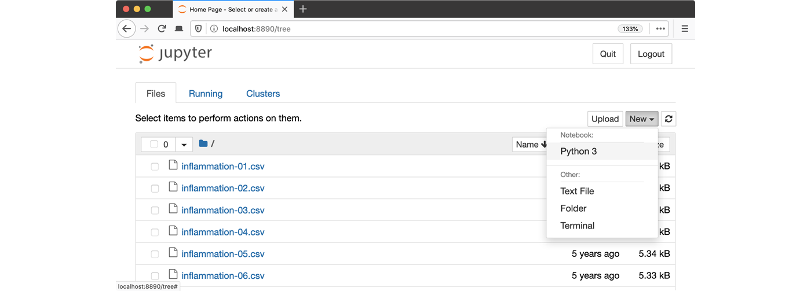

Summary and Schedule
Introduction
This lesson introduces the core concepts of artificial neural networks through a practical application in healthcare: training a model to classify chest X-ray images.
You’ll learn how to:
- Load and visualize medical imaging data
- Prepare images for use in machine learning
- Build and train a convolutional neural network
- Evaluate model performance
- Explore explainability techniques using saliency maps
By the end of the lesson, you’ll have constructed a neural network capable of detecting pleural effusion in chest X-rays — a real-world example of how machine learning can assist clinical decision-making.
Prerequisites
You need to understand the basics of Python before tackling this lesson. The lesson sometimes references Jupyter Notebook although you can use any Python interpreter mentioned below in the setup instructions.
| Setup Instructions | Download files required for the lesson | |
| Duration: 00h 00m | 1. Introduction |
What kinds of conditions can be detected in chest X-rays? How does pleural effusion appear on a chest X-ray? How can chest X-ray data be used to train a machine learning model? |
| Duration: 00h 30m | 2. Visualisation |
How does a chest X-ray with pleural effusion differ from a normal
X-ray? How is an image represented and manipulated as a NumPy array? What steps are needed to prepare images for machine learning? |
| Duration: 01h 30m | 3. Data preparation |
Why do we divide data into training, validation, and test sets? What is data augmentation, and why is it useful for small datasets? How can random transformations help improve model performance? |
| Duration: 02h 30m | 4. Neural networks |
What is a neural network and how is it structured? What role do activation functions play in learning? What is the difference between dense and convolutional layers? Why are convolutional neural networks effective for image classification? |
| Duration: 03h 30m | 5. Training and evaluation |
How is a neural network trained to make better predictions? What do training loss and accuracy tell us? How do we evaluate a model’s performance on unseen data? |
| Duration: 04h 30m | 6. Explainability |
What is a saliency map, and how is it used to explain model
predictions? How do different explainability methods (e.g., GradCAM++ vs. ScoreCAM) compare? What are the limitations of saliency maps in practice? |
| Duration: 05h 30m | Finish |
The actual schedule may vary slightly depending on the topics and exercises chosen by the instructor.
Software Setup
All of the software and data used in this lesson are freely available online, and instructions on how to obtain them are provided below.
Install Python
In this lesson, we will be using Python 3 with some of its most popular scientific libraries. The simplest way to install Python is probably to install the uv package manager following the instructions from ORNL-training’s lesson on Python with uv.
Open a Terminal and Create a Project Directory
We will keep track of all our source code and data files in a single
“project” directory, Desktop/src/ml-xray. In order to run
shell commands from that directory we first have to open a shell and
navigate there.
If you’re using a Unix shell application, such as Terminal app in macOS, Console or Terminal in Linux, or Git Bash on Windows, execute the following command:
On Windows, you can use its native Command Prompt program. The
easiest way to start it up is pressing Windows Logo
Key+R, entering cmd, and hitting
Return. In the Command Prompt, use the following commands to
create your project:
cd /D %userprofile%\Desktop
mkdir src
cd src
uv init --system-certs ml-xray
cd /D %userprofile%\Desktop\src\ml-xrayNote the --system-certs option may be necessary in some
environments.
Download Project Package Dependencies
The major strength of Python is the number of libraries available. These provide functionality like loading and manipulating images, organizing and visualizing tables of data, building and training AI/ML models etc. This lesson is built on several Python libraries.
We can install them up-front using the following commands:
BASH
uv add pillow
uv add matplotlib
uv add numpy
uv add torch torchvision
uv add notebook # for using jupyter (recommended)The Python Package Index hosts most python packages. Any developer can add packages there, so it is very important to read through and understand the package’s origin, contribution history, and developers.
Packages do not always have the same name as the corresponding
import source code line (e.g. import PIL for
pillow). Digging through available packages like this requires effort,
but not as much effort as writing the package yourself. Often, the
package’s documentation is the deciding factor for how successful and
useful it will be.
When you want to progress beyond this lesson, the package documentation and the wider set of materials written about using these packages are the place to go.
Obtain lesson materials
The data that we are going to use for this project consists of 700 chest X-rays. These X-rays are a subset of the public NIH ChestX-ray dataset.
Xiaosong Wang, Yifan Peng, Le Lu, Zhiyong Lu, Mohammadhadi Bagheri, Ronald Summers, ChestX-ray8: Hospital-scale Chest X-ray Database and Benchmarks on Weakly-Supervised Classification and Localization of Common Thorax Diseases, IEEE CVPR, pp. 3462-3471, 2017
- Download chest_xrays.zip.
- Unzip the downloaded files to
Desktop/src/ml-xray.
After unzipping, a new folder (chest-xrays) should be
present in the project directory. It has two sub-folders, each full of
png images.
Opening a Jupyter Notebook
A Jupyter Notebook provides a browser-based interface for working
with Python. We will use notebooks in this tutorial, but it is possible
for an expert to avoid notebooks by typing code directly into any editor
(e.g. vim main.py) and running
(uv run main.py).
The advantage of editing main.py is that you will tend
to structure your code into functions. Ideally, functions accomplish
small units of work and have only a few variables defined. Jupyter
notebooks are good for exploring ideas, but easily become a confusing
jumble of variables (holding lots of data). Best practice is actually to
mix notebooks with python modules (e.g. helpers.py,
ml-model.py, etc.). That way, you can write re-usable
functions in your py files and import helpers
from your Jupyter notebook.
uv run python -m notebookLaunch the notebook by clicking on the “New” button on the right and selecting “Python 3” from the drop-down menu:
